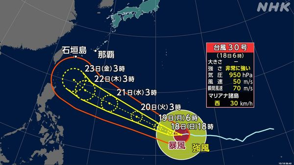
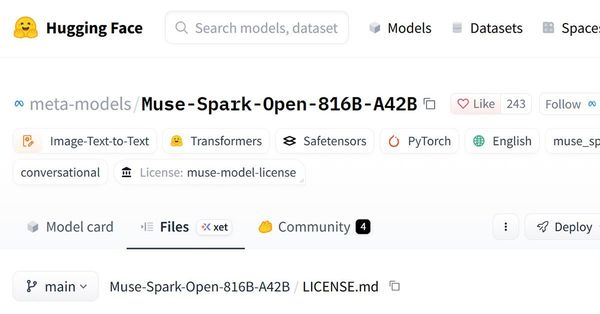
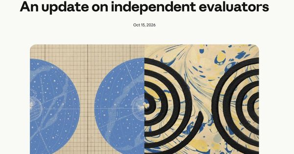
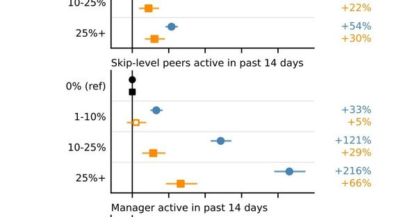
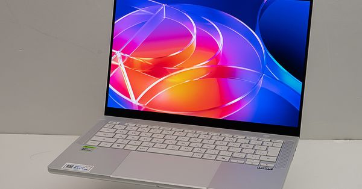
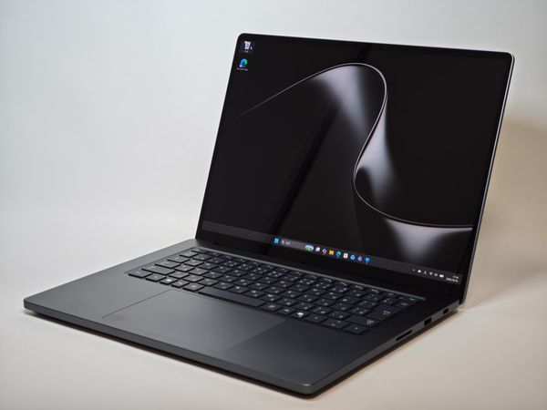
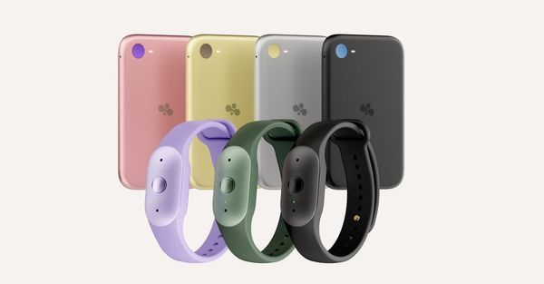

台風30号が急速に発達、23日ごろ沖縄の南へ
Meta、オープンモデル「Muse Spark Open」を発表
Anthropic、外部評価団体METRを社内に常駐させ従業員並みのアクセスを付与
Microsoft、社内数万人でClaude Code・Copilot CLI導入の影響を分析
NVIDIA「RTX Spark」搭載ASUS「ProArt P14」実機レビュー
RTX Spark搭載の新フラッグシップSurfaceを実機レビュー
Amazon、BeeブランドのAIデバイス2機種を発表